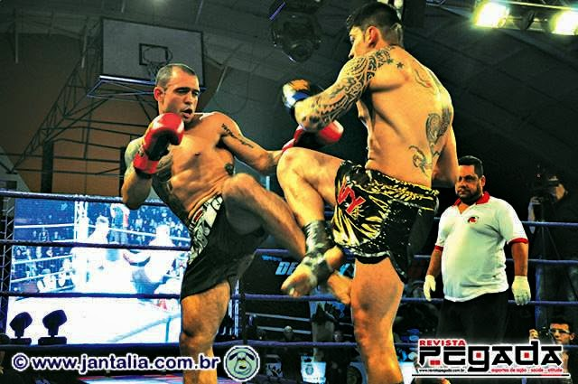

Fernando de Gois
"Pirata"
Fernando de Gois da Luz, conhecido como "Pirata", construiu uma trajetória de mais de duas décadas nas artes marciais. Tornou-se uma referência no Muay Thai na região de Campinas e Valinhos, liderando a transformação pessoal através do esporte.
Início da Trajetória
Iniciou em 1999 em São Bernardo do Campo com o mestre Beloquá. Em 2002, mudou-se para Valinhos integrando a tradicional equipe Muay Thai Nikolai, ajudando a consolidar a modalidade no Brasil em um momento de expansão das federações.
Carreira Competitiva
Cartel profissional de 17 combates: 13 vitórias (6 nocautes). Realizou camps na Brazilian Top Team (BTT) e conquistou a graduação preta em 2008, lutando ao lado de grandes nomes do cenário nacional.
Evolução Profissional
Passou pelo Corinthians MMA Anderson Silva e treinou sob regras de kickboxing. Integrou equipes como a Retz, amadurecendo sua visão como treinador de alto rendimento antes de focar integralmente na formação de novos atletas.
Atuação em Valinhos
Líder da Inside Muay Thai Valinhos, Fernando promove o Muay Thai como ferramenta de transformação e autoestima. O centro de treinamento foca em excelência técnica e segurança para todos os níveis, do iniciante ao competidor.
O Legado
Com mais de 25 anos de história, Fernando "Pirata" segue impactando famílias em Valinhos, usando o tatame como caminho para a disciplina, saúde mental e construção de novos horizontes.